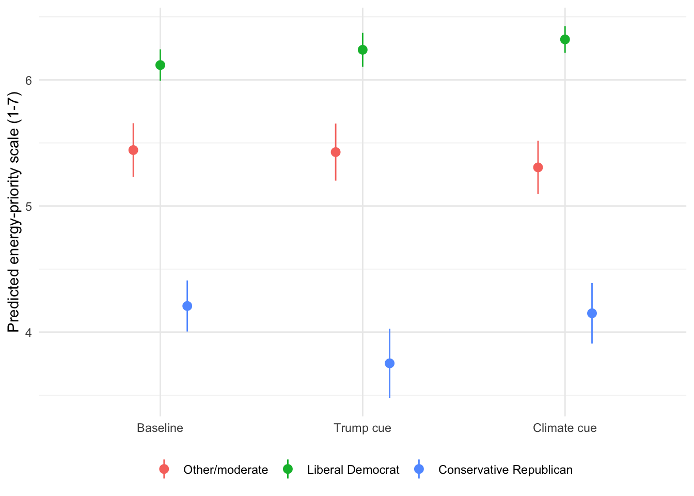
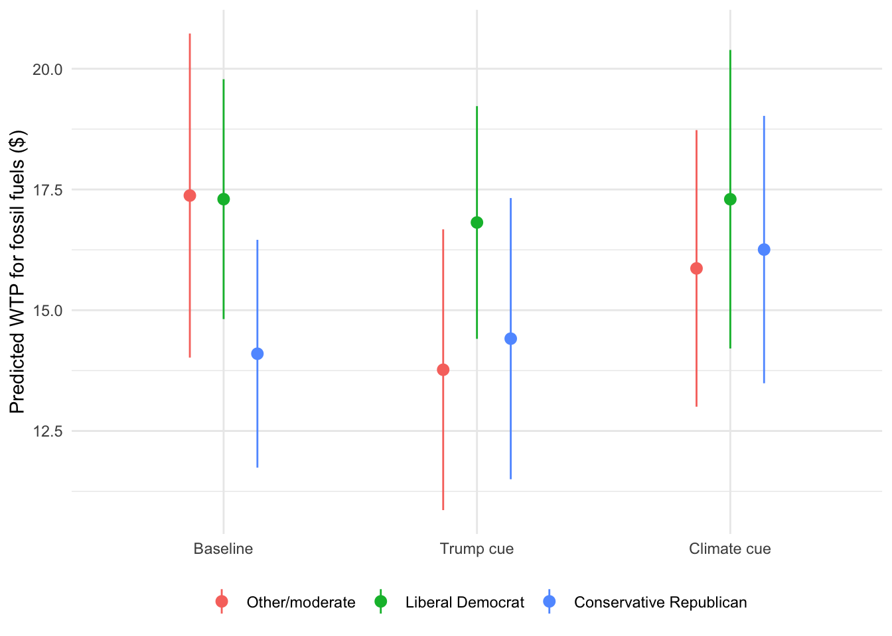
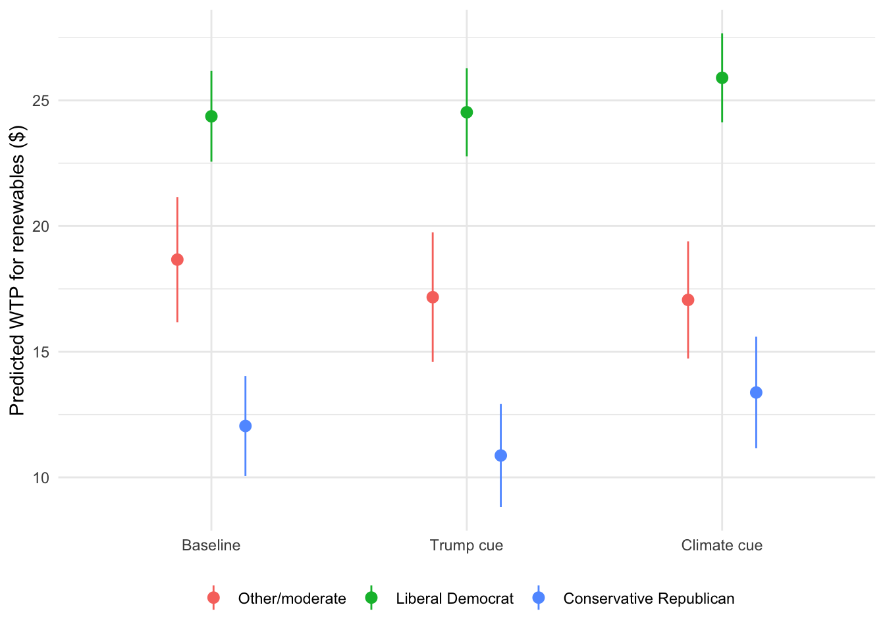

| Variable | Mean | SD | Min | Max | Baseline | Trump cue | Climate cue |
|---|---|---|---|---|---|---|---|
| Energy-priority scale (1-7) | 5.17 | 1.74 | 1 | 7 | 5.17 | 5.15 | 5.20 |
| WTP, fossil fuels (\() | 8.33| 13.79| 0| 46| 8.55| 7.54| 8.86| |WTP, renewables (\)) | 18.21 | 17.43 | 0 | 46 | 17.95 | 17.85 | 18.80 |
| Liberal Democrat | 0.37 | 0.48 | 0 | 1 | 0.35 | 0.40 | 0.37 |
| Conservative Republican | 0.40 | 0.49 | 0 | 1 | 0.41 | 0.36 | 0.42 |
Cues, Partisanship, and Willingness-to-Pay for Energy
Abstract
The second Trump administration has promoted fossil fuels and criticized renewable energy, which may serve as a partisan cue that further polarizes the US public on energy. Using a survey experiment with a quota-based sample of US residents (N = 3,113), I examine how a Trump cue and a climate change cue shape how the public prioritizes fossil fuels versus renewables, as well as their willingness-to-pay (WTP) for each source measured with the Gabor-Granger method. Political beliefs strongly predicted both outcomes, as conservative Republicans prioritized fossil fuels and were WTP less for renewables, whereas liberal Democrats prioritized renewables and were WTP more for them. Neither cue had an average effect on priority or WTP. There is some evidence that the Trump cue moved conservative Republicans toward fossil fuels and the climate cue moved liberal Democrats toward renewables on the priority scale, though these interactions were only marginally significant. The cues did not reliably shift WTP for either source. The results suggest that cues are more likely to move costless expressions of energy preferences than the amount the public states it is willing to pay.
Keywords
willingness-to-pay, partisan cues, renewable energy, fossil fuels, survey experiment
Introduction
Shifting from fossil fuel sources of energy to renewables is needed to mitigate climate change. Yet, such a shift requires the commitment and support of the public. In general, the US public seems to support using more renewable sources, yet there are partisan differences in the degree of that support with Republicans tending to be more supportive of fossil fuels and Democrats tending to be more supportive of renewables (Bergquist, Konisky, and Kotcher 2020; Hamilton et al. 2018; Hawes and Nowlin 2022). Additionally, in the last several years, Republicans have become more supportive of fossil fuels and less supportive of renewables (Kennedy and Kikuchi 2026). Finally, the rhetoric and actions of President Trump since beginning his second term have focused on expanding fossil fuels and reducing renewables. Such actions by such a divisive political actor can serve as a partisan cue for the public.
Cues have been shown to inform public opinion on climate change and energy preferences. For example, partisan and elite cues played a significant role in shaping opinion on climate change (Merkley and Stecula 2021; Tesler 2018), and a climate change cue, or frame, can influence energy preferences (Feldman and Hart 2018). Given the emphases of the second Trump administration regarding fossil fuels and renewables, it is possible that polarization among the public on energy sources may increase in response. In this paper, I explore how exposure to a Trump or climate cue, compared to an unattributed argument for fossil fuels, influences how the US public prioritizes fossil fuels versus renewables as well as their willingness-to-pay (WTP) for those energy sources.
As noted, the public is responsive to cues when forming their views on energy issues; however, less is known about how cues may impact the WTP of the public. The closest work, by Benegal and Green (2024), found that partisan cue-taking outweighed sensitivity to cost in support for the Green New Deal, yet the outcome in that study was support for a policy with a stated cost rather than the amount respondents would add to their own electricity bill for a specific energy source. Additionally, few studies compare the effect of a cue on a costless expression of preference, such as how energy sources should be prioritized, with its effect on a costly one, such as WTP, among the same respondents. In brief, the literature on WTP for energy finds that the public is responsive to price volatility for both fossil fuels and renewables (Cardella, Ewing, and Williams 2017), but in general are willing to pay more for renewable sources (Borchers, Duke, and Parsons 2007; Nkansah and Collins 2019) and is WTP for research and development by the federal government aimed at reducing the use of fossil fuels (Li et al. 2009). However, concern about the environmental impacts of energy (Knapp et al. 2020) and political beliefs (Aldy, Kotchen, and Leiserowitz 2012) can shape the WTP for energy.
In this study, I expand on current research by testing the impacts of a Trump cue versus a climate change cue on the prioritization of and WTP for fossil fuels and renewable sources of energy. Overall, I find that political beliefs shape energy source prioritization as conservative Republicans tend to prioritize and have a higher WTP for fossil fuels and liberal Democrats prioritize and have a higher WTP for renewables. Neither cue had an average effect on either outcome. There is some evidence that conservative Republicans in the Trump cue prioritize fossil fuels more, and liberal Democrats in the climate cue prioritize renewables more, though these interactions are only marginally significant and do not hold after adjusting for multiple comparisons. Finally, the cues did not reliably shift WTP for either energy source, which suggests that cues are more likely to move costless expressions of preference than costly ones.
Cues, Public Opinion, and the Public’s Willingness-to-Pay for Energy
Partisan and elite cues shape public opinion on climate and energy issues, as the public tends to adopt the positions associated with their political party (Ehret, Van Boven, and Sherman 2018; Merkley and Stecula 2021; Tesler 2018). Cues provide an information heuristic, or shortcut, that allows the public to form opinions regarding a host of issues. Additionally, cues provide guides for motivated reasoning, as individuals apply reasoning in service to matching their views with those of their preferred party. Such motivated reasoning has been found in energy policy specifically. Bolsen, Druckman, and Cook (2014) found that party endorsements of an energy law led partisans to support the law when their party endorsed it and to oppose it when the other party did, and Druckman, Peterson, and Slothuus (2013) found, in experiments on drilling and immigration, that elite polarization intensifies the influence of party endorsements on opinion. Given the polarized elite environment surrounding energy, a cue tied to President Trump is likely to be a strong signal to partisans of both parties. Apart from partisan cues, connecting energy policies to the polarized issue of climate change can also shape and polarize public opinion. For example, Feldman and Hart (2018) found that framing a low-carbon energy policy as a climate change solution, rather than as an air pollution or energy security measure, reduced support for that policy among Republicans.
In addition to beliefs and attitudes, partisanship is also likely to influence an individual’s WTP. For example, conservatives were less likely to purchase an energy-efficient light bulb when it was labeled with an environmental message, as opposed to no label (Gromet, Kunreuther, and Larrick 2013). A larger number of studies have examined stated WTP and political beliefs. Kotchen, Boyle, and Leiserowitz (2013) found that Republicans reported lower WTP for a national climate policy than Democrats and independents, but that this partisan gap was largely explained by differences in beliefs about whether climate change is occurring. Using a similar national WTP measure, Kotchen, Turk, and Leiserowitz (2017) estimated an average household WTP of $177 per year for a carbon tax, with respondents favoring that the revenue be spent on clean energy investment over other uses. More recently, Benegal and Green (2024) found that partisan cue-taking, where respondents supported policies proposed by their party, outweighed sensitivity to the policy’s stated cost. Scheuch (2026) also found partisanship to be a significant predictor of WTP for local climate policy, alongside age and income. Overall, political beliefs seem to influence not just abstract support for climate and energy policy, but the dollar amounts people state that they are willing to pay.
Yet, the influence of cues may differ between costless and costly expressions of preference. Stating how energy sources should be prioritized costs a respondent nothing, so agreeing with a trusted source or disagreeing with a disliked one is easy. Indeed, research on expressive responding has found that partisan differences in survey responses shrink when respondents are given an incentive to answer accurately, which suggests that some partisan responses are an expression of support for one’s party rather than a sincere belief (Bullock et al. 2015; Prior, Sood, and Khanna 2015). Stating a WTP, in contrast, asks respondents to consider a cost to their own household. A cue may therefore move how respondents prioritize energy sources without moving the amount they are willing to pay, as the cost of following the cue becomes concrete. However, Benegal and Green (2024) found that partisan cue-taking can outweigh cost sensitivity, so whether cue effects carry over from priority to WTP is an open question.
Looking to work that specifically examines public WTP for renewables and fossil fuels, several studies have found that the public is WTP more for renewables than other sources of energy. For example, Nkansah and Collins (2019) compared WTP for wind against natural gas generation specifically and found consumers willing to pay more for wind. Along similar lines, Murakami et al. (2015) placed fossil fuels, renewables, and nuclear power on the same WTP scale in the US and Japan, and found that respondents in both countries expressed positive WTP for increased renewable generation but negative WTP for increased nuclear generation, with US respondents expressing a stronger preference for renewables than Japanese respondents. However, Walter, Thacher, and Chermak (2023) found that US respondents’ preferences over fossil versus renewable energy futures depended on their geographic proximity to fossil fuel production and their opinion about anthropogenic climate change. Finally, Li et al. (2009) estimated household WTP for a federal energy research and development fund aimed at reducing reliance on fossil fuels, and found broad support for that funding, suggesting that WTP responds to reducing fossil fuel use on its own without reference to another energy source. 1
Theoretical Expectations
Previous research suggests that partisan cues are an important driver of energy preferences and that partisanship and environmental beliefs shape the WTP for energy sources. In this study, I use a survey experiment to examine the influence of a Trump cue and a climate change cue on preferences and the stated WTP for fossil fuels versus renewables.
The experiment includes three conditions, and each is designed to manipulate something different. All respondents see an argument that renewables are not reliable and that fossil fuels are needed for energy security. In the baseline condition the argument is attributed to “some,” so the baseline is an unattributed argument for fossil fuels rather than the absence of a message. In the Trump condition the same argument is attributed to President Trump, so the comparison with the baseline isolates the effect of a partisan source cue. In the climate condition the unattributed argument is followed by a statement that scientists have warned that fossil fuels will make climate change worse and that renewables should be increased. The climate condition therefore combines a scientific source, a climate change frame, and a counterargument, and its comparison with the baseline captures the effect of that combined message. Because the two cue conditions differ from the baseline in different ways, I compare each cue with the baseline rather than comparing the size of the two cue effects with each other.
Based on the research discussed above, I posit the following hypotheses.
H1a: Conservative Republicans will prioritize fossil fuels and be WTP more for fossil fuels than those with other political beliefs.
H1b: Liberal Democrats will prioritize renewables and be WTP more for renewables than those with other political beliefs.
H2a: Those who receive the Trump cue will prioritize fossil fuels and be WTP more for fossil fuels than those in the baseline condition.
H2b: Those who receive the climate cue will prioritize renewables and be WTP more for renewables than those in the baseline condition.
H3a: The effect of the Trump cue on prioritizing and WTP for fossil fuels will be larger among conservative Republicans than among those with other political beliefs.
H3b: The effect of the climate cue on prioritizing and WTP for renewables will be larger among liberal Democrats than among those with other political beliefs.
In addition, I examine two research questions. First, cues from a disliked source may lead partisans to move away from the position of that source (Feldman and Hart 2018), so I ask whether liberal Democrats move toward renewables in response to the Trump cue and whether conservative Republicans move toward fossil fuels in response to the climate cue (RQ1). Second, given the difference between costless and costly expressions of preference, I ask whether the effects of the cues on prioritization carry over to WTP (RQ2).
Data and Measures
To examine the importance of cues and political beliefs in energy preferences I use a survey experiment to examine respondents’ prioritization of fossil fuels versus renewables as well as their WTP for those sources to generate electricity in response to a Trump cue or a climate change cue. Respondents were recruited using Cloud Research, which provides a quota-based sample of US residents, with quotas for age, race, and gender based on US Census data. Additionally, to further ensure as representative a sample as possible, I used the survey and anesrake packages in R to perform iterative raking to compute survey weights that weight respondents based on the US Census’s 2023 American Community Survey (ACS) on demographic variables, including age, race, gender, and education. I also used the Pew Research Center’s National Public Opinion Reference Survey (NPORS) from 2025 to weight the sample based on political party affiliation. With leaners assigned to a party, the NPORS targets were 45 percent Democratic, 46 percent Republican, and 9 percent identifying with neither party. I surveyed 3113 US residents in April 2026, who were randomly assigned to receive one of three treatments, including a cue about Trump’s critiques of renewable energy and his support for fossil fuels (n = 1049), a climate change cue that stated scientists recommend moving away from fossil fuels to renewables to address climate change (n = 1013), or a baseline condition in which the argument for fossil fuels was attributed to “some” (n = 1051).2
All respondents were shown the following paragraph:
The use of renewable energy sources for electricity, including wind energy, solar energy, and battery storage, has risen sharply in recent years. Indeed, most of the growth in new electricity generation in the U.S. has come from renewable sources.
Respondents were then shown the following statement. Those in the Trump cue saw President Trump named specifically, while those in the climate cue and the baseline were shown some have
However, [President Trump has/some have] argued that renewable sources are not reliable and that we need to increase our reliance on fossil fuels (coal, oil, and natural gas) to ensure energy security.
Those in the climate cue saw the following:
Additionally, scientists have warned that an increase in the use of fossil fuels will make climate change worse; therefore, we should increase our use of renewable sources.
Finally, all respondents were shown:
Please consider how you think we should prioritize the development of fossil fuels and renewable sources to generate electricity.
After receiving the cues, respondents were asked, on a 1 to 7 scale, if fossil fuels should be prioritized (= 1), fossil fuels and renewables should be prioritized equally (= 4), or renewable sources should be prioritized (= 7). Next, I asked respondents their willingness-to-pay (WTP) for fossil fuel and renewable sources using the Gabor-Granger method (Gabor and Granger 1966). With the Gabor-Granger method, respondents are shown a random dollar amount and if they are willing to pay that amount, they are next shown a higher amount, and if they are not, they are shown a smaller amount. This approach is a well-established survey-based technique for estimating WTP. It dates to early applications of iterative-bidding price experiments (Jones 1975) and was later formalized in marketing research (Wedel and Leeflang 1998). It remains one of the standard indirect approaches used to measure WTP (Breidert, Hahsler, and Reutterer 2006; Lipovetsky, Magnan, and Zanetti-Polzi 2011).
To establish WTP, I first give respondents information about potential costs associated with each energy source, and the sources were presented in random order. The prompts were written to give respondents a plausible reason that increasing the use of each source would raise their electricity bill. In the WTP for fossil fuels question, I noted that costs associated with renewable energy have decreased and, therefore they may need to pay more to use fossil fuels. For renewable sources respondents were told about the need to increase distribution. Specifically, respondents were shown the following prompts for fossil fuels and renewables, respectively.
The cost of generating electricity from renewable sources has decreased in recent years. In many places, renewable energy sources are often more cost-effective than fossil fuels. Would you support the increased use of fossil fuels if your electricity bill were to increase by the following each month?
Renewable sources have become cheaper in recent years; however, investments are needed to distribute the electricity they produce to homes and businesses. Would you support the increased use of renewable sources if your electricity bill were to increase by the following each month?
The two prompts are not symmetric. The fossil fuel prompt notes that renewables are often more cost-effective than fossil fuels, which likely gives respondents a reason not to pay more for fossil fuels, whereas the renewables prompt does not include a comparable reason not to pay for renewables. As a result, the difference between WTP for fossil fuels and WTP for renewables likely reflects the wording of the prompts as well as respondents’ preferences, and should be interpreted with caution. However, the wording of each prompt was the same in every condition, so the comparison of each cue with the baseline within each energy source is not affected by the asymmetry.
To estimate the maximum/minimum WTP, respondents were first shown a random dollar amount between $1 and $46, in five-dollar increments, and asked if they would be WTP that amount extra per-month in their electricity bill. If they indicated yes they were shown a larger, random dollar-amount, and if they indicated no they were shown a smaller dollar-amount. This continues until they reach the $46-maximum or $1-minimum. Each respondent’s WTP is the highest amount they accepted, and respondents who indicated no at $1 were coded with a WTP of 0. The starting and follow-up amounts were drawn at random, independently of the cue condition, but were not recorded. As such, I cannot control for the starting amount, which may anchor responses, though random assignment of the starting amount means anchoring is unlikely to differ across conditions.
In the following analysis, I examine the prioritization of fossil fuels vs. renewables and the WTP for those energy sources as a function of the cues and political beliefs. Political beliefs include conservative Republicans and liberal Democrats, with other political beliefs (moderates of either party, conservative Democrats, liberal Republicans, and those who identify with neither party) as the excluded referents. The political belief measures were constructed based on responses to a self-reported, 7-point ideology scale (1 = strongly liberal, 2 = liberal, 3 = slightly liberal, 4 = middle of the road, 5 = slightly conservative, 6 = conservative, 7 = strongly conservative) and political party identification. Respondents who identified as independent or with another party were asked whether they lean toward the Democratic or Republican Party, and those who lean toward a party are coded as identifying with that party. Before leaners are assigned, 34 percent of respondents identified as independent or with another party, and after leaners are assigned, only 15 percent identified with neither party. Conservative Republican is coded 1 for respondents who identify as Republican and place themselves at 5, 6, or 7 on the ideology scale (slightly conservative, conservative, or strongly conservative), and liberal Democrat is coded 1 for respondents who identify as Democrat and place themselves at 1, 2, or 3 (strongly liberal, liberal, or slightly liberal). Party identification and ideology were measured after the outcome questions, so the cues could, in principle, have shifted how respondents identified. However, the distribution of political beliefs did not differ across conditions (\(\chi^2\) = 5.20, df = 4, p = 0.268).
Descriptive statistics for the energy-priority scale and the political belief measures are shown in Table 1. The mean on the energy-priority scale was 5.17 (SD = 1.74), which is above the midpoint of 4 and indicates that respondents, on average, leaned toward prioritizing renewables over fossil fuels. Regarding political beliefs, 37 percent of the weighted sample were liberal Democrats and 40 percent were conservative Republicans, with the remaining 23 percent holding other political beliefs. These shares reflect the survey weights, which weight the sample to the party affiliation distribution in the NPORS. Unweighted, 48 percent of respondents were liberal Democrats and 24 percent were conservative Republicans, so the weights roughly double the share of conservative Republicans. To account for this, I also estimate each model without the weights, and those models are shown in the supplemental material.
Results
First, I use OLS to examine the prioritization respondents gave to fossil fuels versus renewables as a function of the cues, their political beliefs, and the interaction between cues and political beliefs. The results are shown in Table 2.
| Priority scale | |
|---|---|
| † p < 0.1, * p < 0.05, ** p < 0.01 | |
| Trump cue | -0.016 |
| (0.159) | |
| Climate cue | -0.137 |
| (0.153) | |
| Liberal Democrat | 0.674** |
| (0.126) | |
| Conservative Republican | -1.236** |
| (0.150) | |
| Trump cue × Liberal Democrat | 0.137 |
| (0.184) | |
| Climate cue × Liberal Democrat | 0.341† |
| (0.174) | |
| Trump cue × Conservative Republican | -0.438† |
| (0.235) | |
| Climate cue × Conservative Republican | 0.079 |
| (0.221) | |
| (Intercept) | 5.443** |
| (0.109) | |
| Num.Obs. | 3113 |
| Adj. R2 | 0.313 |

As expected, conservative Republicans were more likely to prioritize fossil fuels than renewables, with an estimated coefficient of -1.24 on the 1 to 7 scale, and liberal Democrats prioritized renewables at 0.67. In terms of the interactions, which test whether the effect of a cue differs by political beliefs, the Trump cue moved conservative Republicans toward fossil fuels more than it moved those with other political beliefs (b = -0.44, p = 0.062), and the climate cue moved liberal Democrats toward renewables more than those with other political beliefs (b = 0.34, p = 0.051). Both interactions are only marginally significant. Additionally, these are 16 cue x political belief interactions across the four models presented here, and neither interaction is significant after a Holm adjustment for multiple comparisons (adjusted p = 0.94 and 0.81, respectively). Descriptively, the predicted value on the 1 to 7 scale for conservative Republicans in the baseline condition was 4.21, indicating a split roughly evenly between fossil fuels and renewables, and it was 3.75 for those receiving the Trump cue (difference = -0.45, p = 0.009). For liberal Democrats the predicted value was 6.12 in the baseline condition, indicating a priority for renewables, and 6.32 in the climate condition (difference = 0.20, p = 0.015). Without the survey weights, the climate cue x liberal Democrat interaction is significant (p = 0.014), whereas the Trump cue x conservative Republican interaction is not (p = 0.144). In contrast to the interactions, there is no evidence that liberal Democrats moved toward renewables in response to the Trump cue or that conservative Republicans moved toward fossil fuels in response to the climate cue.
Because the models include interactions, the coefficients for the Trump and climate cues are the effects of the cues among those with other political beliefs only. To estimate the average effect of each cue, I also estimate models with the cues alone, shown in the supplemental material. Neither cue had a significant average effect on energy source priority compared to the baseline (Trump cue b = -0.03, p = 0.785; climate cue b = 0.03, p = 0.775).
Next, I examine the percent of respondents at each possible dollar amount of the WTP measure for each source. Those results are in Table 3.
| WTP ($) | Fossil fuels (%) | Renewables (%) |
|---|---|---|
| 0 | 47.0 | 14.0 |
| 1 | 14.7 | 15.6 |
| 6 | 10.6 | 14.0 |
| 11 | 5.6 | 9.1 |
| 16 | 4.9 | 7.3 |
| 21 | 2.7 | 4.3 |
| 26 | 2.9 | 5.8 |
| 31 | 1.2 | 3.2 |
| 36 | 2.1 | 4.7 |
| 41 | 1.9 | 3.8 |
| 46 | 6.3 | 18.3 |
As shown, nearly half of respondents, 47 percent, were not willing to pay any additional amount for fossil fuels, whereas 18.3 percent were willing to pay the max, $46 for renewables. Overall, the median WTP for fossil fuels was $1 with a mean of $8.33. For renewables the median WTP was $11 and the mean was $18.21. Comparing the differences in median and means, the median difference in WTP for renewables versus fossil fuels was $10. For the mean, the difference was $9.88, which is significant based on a survey-weighted paired t-test (t = 22.9, df = 3111, p < .001). However, because the fossil fuel prompt included a reason not to pay for fossil fuels, the size of this difference is likely overstated and should be interpreted with caution.
Given the large percentage of respondents with a WTP = $0 for fossil fuels, I model the WTP for fossil fuels in two parts. First, I use a logit model to see whether a respondent has any positive WTP. Next, using OLS, I examine the WTP for fossil fuels, among those who are WTP >0, and for renewables. The results of all three models are shown in Table 4. Because WTP is bounded at $0 and $46, I also estimate a censored-normal (Tobit) model for each source, which treats $0 as censored from below and $46 as censored from above. Those models are shown in the supplemental material.
| Fossil fuels: Any WTP (logit) | Fossil fuels: Amount, if WTP > $0 (OLS) | Renewables: Amount (OLS) | |
|---|---|---|---|
| † p < 0.1, * p < 0.05, ** p < 0.01 | |||
| Trump cue | -0.263 | -3.607 | -1.495 |
| (0.204) | (2.265) | (1.828) | |
| Climate cue | 0.100 | -1.509 | -1.604 |
| (0.206) | (2.250) | (1.741) | |
| Liberal Democrat | -0.413* | -0.075 | 5.703** |
| (0.182) | (2.130) | (1.569) | |
| Conservative Republican | 0.704** | -3.275 | -6.620** |
| (0.205) | (2.092) | (1.626) | |
| Trump cue × Liberal Democrat | 0.007 | 3.124 | 1.656 |
| (0.257) | (2.871) | (2.234) | |
| Climate cue × Liberal Democrat | -0.270 | 1.507 | 3.136 |
| (0.259) | (3.026) | (2.167) | |
| Trump cue × Conservative Republican | 0.423 | 3.919 | 0.320 |
| (0.299) | (2.964) | (2.337) | |
| Climate cue × Conservative Republican | -0.042 | 3.665 | 2.935 |
| (0.293) | (2.917) | (2.311) | |
| (Intercept) | 0.048 | 17.374** | 18.665** |
| (0.145) | (1.712) | (1.271) | |
| Num.Obs. | 3113 | 1433 | 3113 |
| Adj. R2 | 0.002 | 0.104 | |
| McFadden's pseudo R2 | 0.061 | ||
For fossil fuels, conservative Republicans were significantly more likely than the reference group to have any positive WTP (b = 0.70, log-odds scale), predicted at 68.0% in the baseline condition compared to 41.0% for liberal Democrats (b = -0.41, p = 0.023). However, neither the cues nor the interactions between the cues and political beliefs were significant. The WTP amounts are shown in Figure 2 and Figure 3.


For fossil fuels, neither the Trump cue nor its interaction with conservative Republican identity significantly predicted a WTP > $0 or, among those with positive WTP, the dollar amount. Overall, the predicted WTP > $0 for conservative Republicans was 68.0% in the baseline condition versus 71.3% in the Trump cue, and the predicted amount conditional on paying something was $14.10 versus $14.41. In the Tobit model of fossil fuel WTP, the Trump cue x conservative Republican interaction is significant (b = 7.78, p = 0.038). However, this interaction reflects a lower WTP for fossil fuels in the Trump cue among those with other political beliefs (b = -5.66, p = 0.047) rather than a higher WTP among conservative Republicans, whose WTP for fossil fuels in the Trump cue did not differ from the baseline (difference = 2.12, p = 0.381). The interaction is also not significant after adjusting for multiple comparisons (Holm-adjusted p = 0.65).
Looking to renewables, liberal Democrats were willing to pay $5.70 more, on average, and conservative Republicans were willing to pay $6.62 less, for a predicted total of $12.04 in the baseline condition. The climate cue was associated with a higher WTP for renewables among liberal Democrats (b = 3.14, p = 0.148), but the estimate was nearly as large among conservative Republicans, and neither interaction was significant.
The absence of significant interactions for WTP should not be read as evidence that the cues have no effect on WTP. With 80 percent power and \(\alpha\) = .05, the smallest interaction effects the design could reliably detect are $6.07 to 6.55 for renewables and $8.04 to 8.48 for the amount of fossil fuel WTP, compared with 0.49 to 0.66 points for the priority scale. Smaller effects of the cues on WTP cannot be ruled out. Additionally, neither cue had a significant average effect on WTP for either source in the models with the cues alone (all p \(\geq\) 0.135).
Overall, respondents leaned toward renewables on the priority scale, and the WTP for renewables was higher than for fossil fuels, though the size of the WTP difference likely reflects the wording of the prompts. The difference in WTP was also not uniform across groups. For example, among conservative Republicans in the Trump cue, the WTP for renewables did not differ significantly from the WTP for fossil fuels (difference = $0.59, p = 0.669).
Comparing the results to the hypotheses, the support is mixed. As expected, political beliefs shaped both preferences and WTP, largely supporting H1a and H1b. Conservative Republicans prioritized fossil fuels more than those with other political beliefs, were more likely to have any positive WTP for fossil fuels, and were WTP less for renewables. Liberal Democrats, in contrast, prioritized renewables, were less likely to have any positive WTP for fossil fuels, and were WTP more for renewables. However, among those WTP something for fossil fuels, conservative Republicans were not WTP more than others. H2a and H2b were not supported, as neither the Trump cue nor the climate cue had a significant average effect on energy priority or WTP for either source compared to the baseline condition. H3a and H3b received limited support. There is some evidence that the Trump cue moved conservative Republicans toward fossil fuels (p = 0.062) and the climate cue moved liberal Democrats toward renewables (p = 0.051) on the priority scale, but both interactions were only marginally significant and neither holds after adjusting for multiple comparisons. Regarding RQ1, there was no evidence that either cue led partisans to move away from the position of the source. Regarding RQ2, the shifts in priority did not carry over to WTP, as none of the interactions between the cues and political beliefs reliably predicted WTP for fossil fuels or renewables. These results suggest that cues are likely more effective at moving the priority the public gives to energy sources than the amount they are willing to pay, though the design could not detect small effects on WTP.
Discussion and Conclusion
A clean energy transition is needed to mitigate climate change, and public support is needed for the energy transition. However, President Trump’s rhetoric and actions on energy may serve to polarize the public. This study examined how exposure to a Trump cue or a climate change cue shapes the US public’s prioritization of, and willingness-to-pay for, fossil fuel versus renewable electricity, and how these responses are shaped by political beliefs. The results show that support for energy sources is polarized along partisan lines, both in how respondents prioritized fossil fuels against renewables and in the dollar amounts they were willing to pay. There is also some evidence that a Trump cue moved conservative Republicans toward fossil fuels and a climate cue moved liberal Democrats toward renewables, though these effects were marginal and should be considered tentative. Together, these findings suggest that cues may further exacerbate existing partisan divisions in how the public prioritizes energy sources.
The cue effects were also uneven across the two outcomes. Political beliefs appear to condition the effect of the cues on prioritization, but not on WTP. For example, the Trump cue did not significantly change WTP for fossil fuels among conservative Republicans. This is likely because stating a priority is costless, whereas stating a WTP asks respondents to consider a cost to their own household. Agreeing with a trusted source, or reacting to a cue, may be easy when nothing is at stake, but the concrete cost of an increase in an electricity bill may limit the influence of cues, especially in times of concern about rising energy costs.3 Additionally, a single cue is likely a weaker treatment than the sustained rhetoric respondents may encounter outside of a survey. However, the design could only detect relatively large interaction effects on WTP, so small effects of the cues on WTP cannot be ruled out.
These results carry several implications for climate and energy policy. First, respondents, on average, leaned toward prioritizing renewables over fossil fuels, with a mean of 5.17 on the 1 to 7 scale, and 86 percent of respondents reported some positive WTP for renewables. This suggests that renewable energy investment likely has general public support even in a polarized environment, though the size of the WTP gap between renewables and fossil fuels should be interpreted with caution. Second, if the tentative responsiveness of conservative Republicans and liberal Democrats to identity-congruent cues holds, elite rhetoric, including rhetoric tied to a single prominent figure, may widen the partisan gap in energy preferences further, which is a risk for policymakers seeking durable, bipartisan support for energy policy. Third, because the cues did not shift prioritization in the sample overall and did not reliably shift WTP, messaging strategies aimed at building broad coalitions for the energy transition likely benefit from emphasizing shared, cross-partisan benefits of renewables, such as reliability or local economic development, rather than frames tied to a specific political figure or to climate change.
This study has some limitations. First, respondents were recruited from an opt-in, quota-based panel rather than a probability sample, and the survey weights substantially increase the share of conservative Republicans. Second, the WTP prompts were not symmetric, as the fossil fuel prompt included a reason not to pay for fossil fuels, which likely inflates the difference between WTP for renewables and fossil fuels. Third, the conditions were not parallel. The Trump cue changed only the source of the argument for fossil fuels, whereas the climate cue added a scientific source, a climate change frame, and a counterargument, so the effects of the two cues cannot be compared directly. Fourth, party identification and ideology were measured after the outcomes, though their distribution did not differ across conditions. Fifth, the survey did not include attention or manipulation checks, and the starting amounts for the WTP questions were not recorded. Finally, the WTP measure relies on a hypothetical, stated-preference elicitation, and stated WTP does not always translate into WTP once a real price change is introduced. The cues were also each delivered once, in a single survey context, and their effects may not persist or generalize to the repeated, cumulative exposure people experience outside of a survey.
Future research should examine whether repeated exposure to partisan cues over time widens the partisan gap in energy preferences identified here, and whether the cues have larger effects on WTP when respondents are asked to pay the stated amount rather than simply report it. Future research should also use parallel cue conditions and symmetric WTP prompts, and test whether cue effects on costless and costly expressions of preference differ within the same respondents.
Statements and Declarations
Ethics approval. This study was reviewed and approved by the University of Texas at Arlington Institutional Review Board [PROTOCOL NUMBER], and all respondents provided informed consent.
Pre-registration. The study was not pre-registered.
Data availability. The code to reproduce the analysis is available at https://github.com/mnowlin/cue-WTP. The survey data will be made available upon publication.
References
Aldy, Joseph E., Matthew J. Kotchen, and Anthony A. Leiserowitz. 2012. “Willingness to Pay and Political Support for a US National Clean Energy Standard.” Nature Climate Change 2(8): 596–99.
Benegal, Salil, and Jon Green. 2024. “Cost Sensitivity, Partisan Cues, and Support for the Green New Deal.” Journal of Environmental Studies and Sciences 14(4): 763–75.
Bergquist, Parrish, David M Konisky, and John Kotcher. 2020. “Energy Policy and Public Opinion: Patterns, Trends and Future Directions.” Progress in Energy 2(3): 032003.
Bolsen, Toby, James N. Druckman, and Fay Lomax Cook. 2014. “The Influence of Partisan Motivated Reasoning on Public Opinion.” Political Behavior 36(2): 235–62.
Borchers, Allison M., Joshua M. Duke, and George R. Parsons. 2007. “Does Willingness to Pay for Green Energy Differ by Source?” Energy Policy 35(6): 3327–34.
Breidert, Christoph, Michael Hahsler, and Thomas Reutterer. 2006. “A Review of Methods for Measuring Willingness-to-Pay.” Innovative Marketing 2(4): 8–32.
Bullock, John G., Alan S. Gerber, Seth J. Hill, and Gregory A. Huber. 2015. “Partisan Bias in Factual Beliefs about Politics.” Quarterly Journal of Political Science 10(4): 519–78.
Cardella, Eric, Bradley T. Ewing, and Ryan B. Williams. 2017. “Price Volatility and Residential Electricity Decisions: Experimental Evidence on the Convergence of Energy Generating Source.” Energy Economics 62: 428–37.
Druckman, James N., Erik Peterson, and Rune Slothuus. 2013. “How Elite Partisan Polarization Affects Public Opinion Formation.” American Political Science Review 107(01): 57–79.
Ehret, Phillip J., Leaf Van Boven, and David K. Sherman. 2018. “Partisan Barriers to Bipartisanship: Understanding Climate Policy Polarization.” Social Psychological and Personality Science 9(3): 308–18.
Feldman, Lauren, and P. Sol Hart. 2018. “Climate Change as a Polarizing Cue: Framing Effects on Public Support for Low-Carbon Energy Policies.” Global Environmental Change 51: 54–66.
Gabor, André, and C. W. J. Granger. 1966. “Price as an Indicator of Quality: Report on an Enquiry.” Economica 33: 43–70.
Gromet, Dena M., Howard Kunreuther, and Richard P. Larrick. 2013. “Political Ideology Affects Energy-Efficiency Attitudes and Choices.” Proceedings of the National Academy of Sciences 110(23): 9314–19.
Hamilton, Lawrence C., Erin Bell, Joel Hartter, and Jonathan D. Salerno. 2018. “A Change in the Wind? US Public Views on Renewable Energy and Climate Compared.” Energy, Sustainability and Society 8(1): 11.
Hawes, Rachel, and Matthew C. Nowlin. 2022. “Climate Science or Politics? Disentangling the Roles of Citizen Beliefs and Support for Energy in the United States.” Energy Research & Social Science 85: 102419.
Jones, D. Frank. 1975. “A Survey Technique to Measure Demand Under Various Pricing Strategies.” Journal of Marketing 39(3): 75–77.
Kennedy, Brian, and Emma Kikuchi. 2026. “Americans’ Shifting Views on Energy Sources, Policy in 2026.” https://www.pewresearch.org/science/2026/04/03/americans-shifting-views-on-energy-issues/ (April 21, 2026).
Knapp, Lauren, Eric O’Shaughnessy, Jenny Heeter, Sarah Mills, and John M. DeCicco. 2020. “Will Consumers Really Pay for Green Electricity? Comparing Stated and Revealed Preferences for Residential Programs in the United States.” Energy Research & Social Science 65: 101457.
Kotchen, Matthew J., Kevin J. Boyle, and Anthony A. Leiserowitz. 2013. “Willingness-to-Pay and Policy-Instrument Choice for Climate-Change Policy in the United States.” Energy Policy 55: 617–25.
Kotchen, Matthew J., Zachary M. Turk, and Anthony A. Leiserowitz. 2017. “Public Willingness to Pay for a US Carbon Tax and Preferences for Spending the Revenue.” Environmental Research Letters 12(9).
Li, Hui, Hank C. Jenkins-Smith, Carol L. Silva, Robert P. Berrens, and Kerry G. Herron. 2009. “Public Support for Reducing US Reliance on Fossil Fuels: Investigating Household Willingness-to-Pay for Energy Research and Development.” Ecological Economics 68(3): 731–42.
Lipovetsky, Stan, Shon Magnan, and Andrea Zanetti-Polzi. 2011. “Pricing Models in Marketing Research.” Intelligent Information Management 3(5): 167–74.
Merkley, Eric, and Dominik A. Stecula. 2021. “Party Cues in the News: Democratic Elites, Republican Backlash, and the Dynamics of Climate Skepticism.” British Journal of Political Science 51(4): 1439–56.
Murakami, Kayo, Takanori Ida, Makoto Tanaka, and Lee Friedman. 2015. “Consumers’ Willingness to Pay for Renewable and Nuclear Energy: A Comparative Analysis Between the US and Japan.” Energy Economics 50: 178–89.
Nkansah, Kofi, and Alan R Collins. 2019. “Willingness to Pay for Wind Versus Natural Gas Generation of Electricity.” Agricultural and Resource Economics Review 48(1): 44–70.
Prior, Markus, Gaurav Sood, and Kabir Khanna. 2015. “You Cannot Be Serious: The Impact of Accuracy Incentives on Partisan Bias in Reports of Economic Perceptions.” Quarterly Journal of Political Science 10(4): 489–518.
Scheuch, Eric. 2026. “Voters Support and Are Willing to Pay for Local Climate Adaptation Policies.” Urban Affairs Review: 10780874261475229.
Tesler, Michael. 2018. “Elite Domination of Public Doubts About Climate Change (Not Evolution).” Political Communication 35(2): 306–26.
Walter, Kara A., Jennifer Thacher, and Janie M. Chermak. 2023. “Examining Willingness to Pay for Energy Futures in a Fossil and Renewable Energy-Rich Locale.” Energy Policy 181: 113661.
Wedel, Michel, and Peter S. H. Leeflang. 1998. “A Model for the Effects of Psychological Pricing in Gabor–Granger Price Studies.” Journal of Economic Psychology 19(2): 237–60.
Footnotes
It should be noted that WTP for energy is not just a function of partisanship or environmental beliefs. Cardella, Ewing, and Williams (2017) found that price volatility, not just price level, shapes residential customers’ generation-source decisions, and Knapp et al. (2020) found that stated WTP for green electricity programs does not consistently translate into enrollment once a real premium is offered. Aldy, Kotchen, and Leiserowitz (2012) likewise found that WTP for a national clean energy standard depended on how the standard was structured, in addition to the respondents’ political affiliations.↩︎
Randomization produced conditions that were similar on gender, college education, income, and concern about the cost of electricity, but the conditions differed somewhat in age and in the share of white respondents. A balance table is shown in the supplemental material, and the results are similar when controlling for demographics.↩︎
I ran a robustness check that included a measure of the respondent’s concern about the cost of energy. The results are similar to what is reported here, and are shown in the supplemental material.↩︎